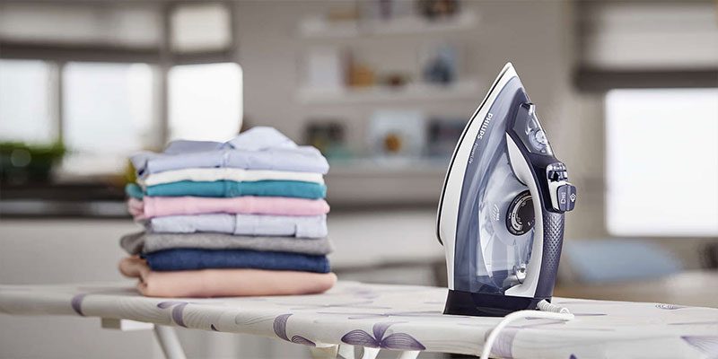
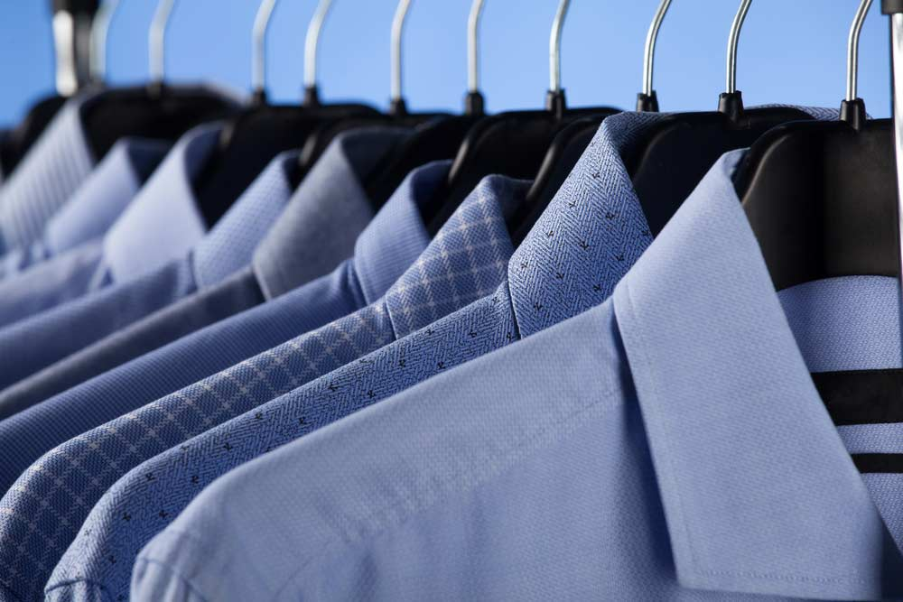

Especialistas em passar suas roupas com todo cuidado e carinho que você merece.
A Gil Passadeira é uma empresa com 25 anos de experiência, iniciando suas atividades nos anos 2000. Ao longo dos anos, nos tornamos especialistas em passar roupas de todos os tipos, garantindo qualidade e dedicação em cada peça. Nossa missão é facilitar o seu dia a dia com serviços rápidos e de alta qualidade.
Experiência de 25 anos: Começamos nossa jornada nos anos 2000, e ao longo dessas décadas, aprendemos a cuidar das suas roupas com atenção especial para cada tecido e estilo.
Confira os serviços que oferecemos:
Trabalhamos com roupas delicadas como seda, linho e tecidos finos. Garantimos o máximo cuidado para que suas roupas estejam sempre impecáveis, sem danos.
Para ocasiões especiais, oferecemos o serviço de passagem de roupas de festa, ternos e vestidos. Deixe suas roupas prontas para impressionar no grande dia.
Oferecemos pacotes mensais que se adequam ao seu estilo de vida. Se você tem muitas roupas para passar, essa é a opção ideal para garantir praticidade e economia.
Gostaria de saber o valor para passar suas roupas? Preencha o formulário abaixo ou entre em contato conosco diretamente no WhatsApp para um orçamento personalizado!
Ou entre em contato diretamente pelo WhatsApp.
Entre em contato conosco diretamente pelo WhatsApp:
WhatsApp: Clique aqui para chamar no WhatsApp (16) 99331-4833
Telefone: (16) 99331-4833